First Steps into using pyforce
pyforce is a Python package for data-driven reduced order modelling approaches built upon scientific computing libraries such as numpy, scipy, scikit-learn and pyvista. The main goal of pyforce consists in providing a rather simple and intuitive interface for researchers on this topic: even though the main focus of the authors is on nuclear reactors multi-physics scenarios (including fluid dynamics and neutronics mainly), the package is designed to be applicable to a wide
range of problems in scientific computing and engineering.
This notebook wants to provide a first hands-on introduction to some basics classes and methods, which are needed to effectively use pyforce for your own applications. Before proceeding, this notebook supposes the reader has a basic knowledge of the ROM terminology.
In particular, in this tutorial you will learn how to:
Generate custom snapshots on a
pyvistagrid and save them intoFunctionsListobjects (basic class using by pyforce to store data).Basic Plotting of
FunctionsList.Write and read snapshots from disk using pyforce I/O functions.
Calculate integral using
IntegralCalculatorclass.
For interested users in high-dimensional data, this notebook also shows how to read decomposed snapshots generated by OpenFOAM.
Basics of the FunctionsList class
In this section, we are going to load an example mesh from pyvista and generate custom snapshots on it, exploring some basic functionalities of the FunctionsList class.
[1]:
from pyvista import examples
import pyvista as pv
import numpy as np
grid = examples.download_bunny()
# Extract the points of the grid
nodes = grid.points
pl = pv.Plotter(window_size=[400, 400])
pl.add_mesh(grid, show_edges=False, color='white')
pl.view_xy()
pl.show(jupyter_backend='static') # jupyter_backend='html', 'trame'
Let \(\mathbf{x}=(x,y,z)\) be the spatial coordinate of the mesh nodes, we are going to define a custom function, dependent on \(\mathbf{x}\) and on a parameter \(\mu\), as follows: \begin{equation*} f(x,y,z;\,\mu) = \sin\!\Big( \mu \sqrt{x^2 + y^2} + 5 \,\arctan\!\frac{y}{x} +\mu z\Big) \end{equation*}
The FunctionsList class is used to store the snapshots, and it can be initialized by providing the number of nodes of the mesh. Snapshots can be appended to the FunctionsList object by using the append method.
[2]:
from pyforce.tools.functions_list import FunctionsList
# Definining the function
def combo_field(coords, mu):
x, y, z = coords.T
r = np.sqrt(x**2 + y**2)
theta = np.arctan2(y, x)
return np.sin(mu * r + 5*theta + mu*z)
# Initialization of the class
snapshots = FunctionsList(nodes.shape[0])
mu_samples = np.linspace(100, 200, 100)
for mu in mu_samples:
snapshots.append(combo_field(nodes, mu=mu))
The FunctionsList comes with a plotting method, which can be used to visualize the sequence of snapshots.
[3]:
snapshots.plot_sequence(grid,
sampling=5, view='xy', cmap='RdBu', resolution=[400,400], title='Snapshot ID', varname='f', # optional
)
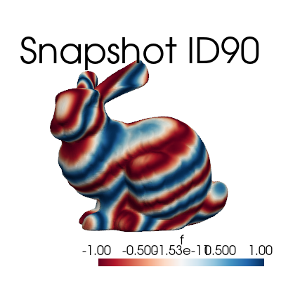
The class comes also with a method to plot a single snapshot, by providing its index in the list.
[4]:
snapshots.plot(grid, idx_to_plot=10,
cmap='RdBu', resolution=[400,400] # optional
)
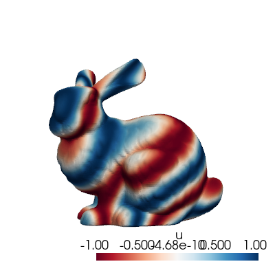
Before delving into the I/O functionalities, let’s mention some useful methods of the FunctionsList class:
return_matrix: Returns the stored snapshots as a 2D NumPy array, whose shape is(n_space, n_snapshots)\(\longleftrightarrow (\mathcal{N}_h, N_s)\).build_from_matrix: Builds the snapshot list from a 2D NumPy array, whose shape is(n_space, n_snapshots).lin_combine: Linearly combines the stored snapshots using given coefficients (useful for reduced basis approximation). Consider \(\boldsymbol{\alpha}\in N_s\), the elements \(f_i\) of theFunctionsListare linearly combined as follows: \begin{equation*} F(\mathbf{x}) = \sum_{i=1}^{N_s} \alpha_i f_i(\mathbf{x}) \end{equation*}min,max,mean,std: Returns the minimum, maximum, mean and standard deviation of the stored snapshots, respectively.
I/O methods within pyforce
In this section, we are going to explore the I/O functionalities of pyforce.
Starting from the FunctionsList object generate before, we can store them using the store method. The data can be store in h5 or npz format (either compressed or not).
[5]:
snapshots.store(var_name='f',
filename='example_snaps',
format = 'h5',
compression=True)
snapshots.store(var_name='f',
filename='example_snaps',
format = 'npz',
compression=True)
Once the data, these can be loaded with the ImportFunctionsList function.
[6]:
from pyforce.tools.write_read import ImportFunctionsList
snaps_h5 = ImportFunctionsList('example_snaps', format='h5')
snaps_npz = ImportFunctionsList('example_snaps', format='npz')
# Check if the import was successful
np.max(np.abs(snaps_h5.return_matrix() - snapshots.return_matrix())), np.max(np.abs(snaps_npz.return_matrix() - snapshots.return_matrix()))
# Clean up
! rm example_snaps.*
The pyforce package provides also a class to import snapshots from an OpenFOAM simulation through the ReadFromOF class: this class will be explained in details in future tutorials since it will be extended used.
Integral Calculations
Integrals can be calculated through the IntegralCalculator class: in this section, we are going to explore its functionalities.
At first, let us load a grid from the cavity problem.
[7]:
from pyvista import examples
grid = examples.download_cavity()['internalMesh']
grid.clear_data()
pl = pv.Plotter(window_size=[400, 400])
pl.add_mesh(grid, show_edges=True, color='white')
pl.view_xy()
pl.show(jupyter_backend='static') # jupyter_backend='html', 'trame'
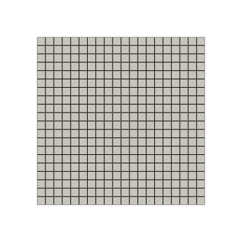
Let us consider two functions: \begin{equation*} \begin{split} u(x,y) &= x^2+y^2 \\ v(x,y) &= x^3 + y \end{split} \end{equation*} and evaluate them on the cavity grid.
A plot using matplotlib is also provided.
[8]:
nodes = grid.points
u = nodes[:, 0]**2 + nodes[:, 1]**2
v = -nodes[:, 0]**3 - nodes[:, 1]
import matplotlib.pyplot as plt
fig, axs = plt.subplots(1,2, figsize=(10,4))
cont_u = axs[0].tricontourf(nodes[:,0], nodes[:,1], u, levels=100, cmap="viridis")
cbar_u = fig.colorbar(cont_u, ax=axs[0])
axs[0].set_title('$u(x,y)$')
cont_v = axs[1].tricontourf(nodes[:,0], nodes[:,1], v, levels=100, cmap="plasma")
cbar_v = fig.colorbar(cont_v, ax=axs[1])
axs[1].set_title('$v(x,y)$')
for ax in axs:
ax.set_xticks([])
ax.set_yticks([])
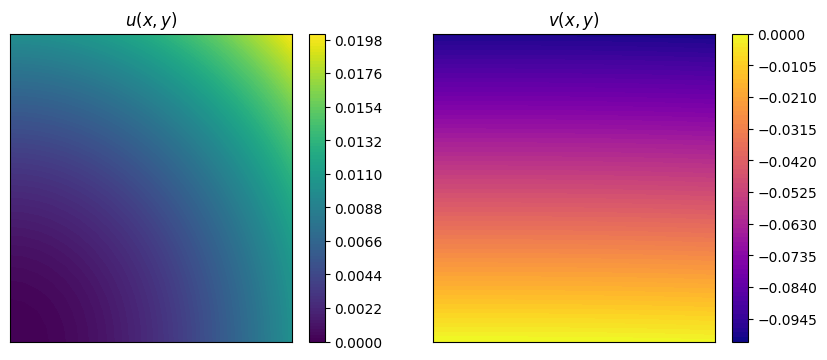
The IntegralCalculator class can be initialized by providing the grid. There are different integrals that can be computed, such as (\(\Omega\) is the spatial domain, which is \([0,1/10]\times[0,1/10]\times[0,1/100]\) in this case):
\begin{equation*} \begin{split} \text{Integral:} \quad & \int_\Omega u(x,y) \, d\Omega = \Delta z \cdot \frac{2}{10} \cdot \frac{1}{3000} = \Delta z \cdot \frac{1}{15000} \\ \text{Average:} \quad & \frac{1}{|\Omega|} \int_\Omega u(x,y) \, d\Omega = ... = \frac{1}{\Delta x\cdot \Delta y\cdot \Delta z}\Delta z \cdot \frac{1}{15000} = \frac{1}{150}\\ L^1\text{-norm:} \quad & \|v\|_{L^1(\Omega)}=\int_\Omega |v(x,y)| \, d\Omega\\ L^2\text{ inner product:} \quad & (u,v)_{L^2(\Omega)}=\int_\Omega u(x,y)\cdot v(x,y) \, d\Omega\\ L^2\text{-norm:} \quad & \|u\|_{L^2(\Omega)}=\sqrt{\int_\Omega u(x,y)^2 \, d\Omega} \end{split} \end{equation*}
[9]:
from pyforce.tools.backends import IntegralCalculator
calc = IntegralCalculator(grid, gdim = 3)
integrals = {
'integral': calc.integral(u),
'average ': calc.average(u),
'L1_norm ': calc.L1_norm(v),
'L2_inner': calc.L2_inner_product(u, v),
'L2_norm ': calc.L2_norm(u)
}
for key, value in integrals.items():
print(f"{key}: {value:.8e}")
integral: 6.67500029e-07
average : 6.67500024e-03
L1_norm : 5.02506261e-06
L2_inner: -4.19379194e-08
L2_norm : 7.89163352e-05
Trick to handle 1D datasets
pyforce has been mainly designed to handle high-dimensional datasets (2D/3D). However, it is possible to use the IntegralCalculator class also for 1D datasets, by exploiting a simple trick: we can embed the 1D data into a 3D grid with unitary thickness in the unused directions.
[11]:
import numpy as np
import pyvista as pv
nx = 10000
x_min, x_max = -1.0, 2.0
dx = (x_max - x_min) / nx # size in x
dy = dx # size in y
dz = dx # size in z
x = np.linspace(x_min, x_max, nx).reshape((nx, 1, 1))
grid = pv.ImageData()
grid.dimensions = np.array(x.shape) + 1 # (nx+1, 2, 2)
grid.origin = (x_min, 0.0, 0.0) # optional
grid.spacing = (dx, dy, dz)
fun = (x**2 * (1 - x)**2).flatten()
calcu = IntegralCalculator(grid)
calcu.cell_sizes = calcu.cell_sizes / dx**2
print('Exact integral value = ', 2.1)
print('Numpy Integration with trapezoid rule = ', np.trapz(fun, x[:, 0, 0]))
print('Numpy Integration with reactangle rule = ', np.sum(fun) * dx)
print('Pyforce Integration with 3D trick = ', calcu.integral(fun))
Exact integral value = 2.1
Numpy Integration with trapezoid rule = 2.1000001800360044
Numpy Integration with reactangle rule = 2.1009901800180018
Pyforce Integration with 3D trick = 2.1009901800180018
Reading and post-processing decomposed OpenFOAM data with pyforce
This part demonstrates how to read and post-process decomposed OpenFOAM data using the pyforce library: in particular, we will read a decomposed case, reconstruct the data, and visualize it.
Furthermore, we will show how to compute average values and fluctuations of a field over time.
The class ReadFromOF from the module pyforce.tools.write_read allows reading OpenFOAM cases, including decomposed ones, by setting the parameter decomposed_case=True.
[12]:
from pyforce.tools.write_read import ReadFromOF
of = ReadFromOF('Datasets/channel395_OF11', skip_zero_time=True, decomposed_case=True)
grid = of.mesh()
import pyvista as pv
pl = pv.Plotter()
pl.add_mesh(grid, show_edges=True, color='white')
pl.show(jupyter_backend='static')
Case Type decomposed
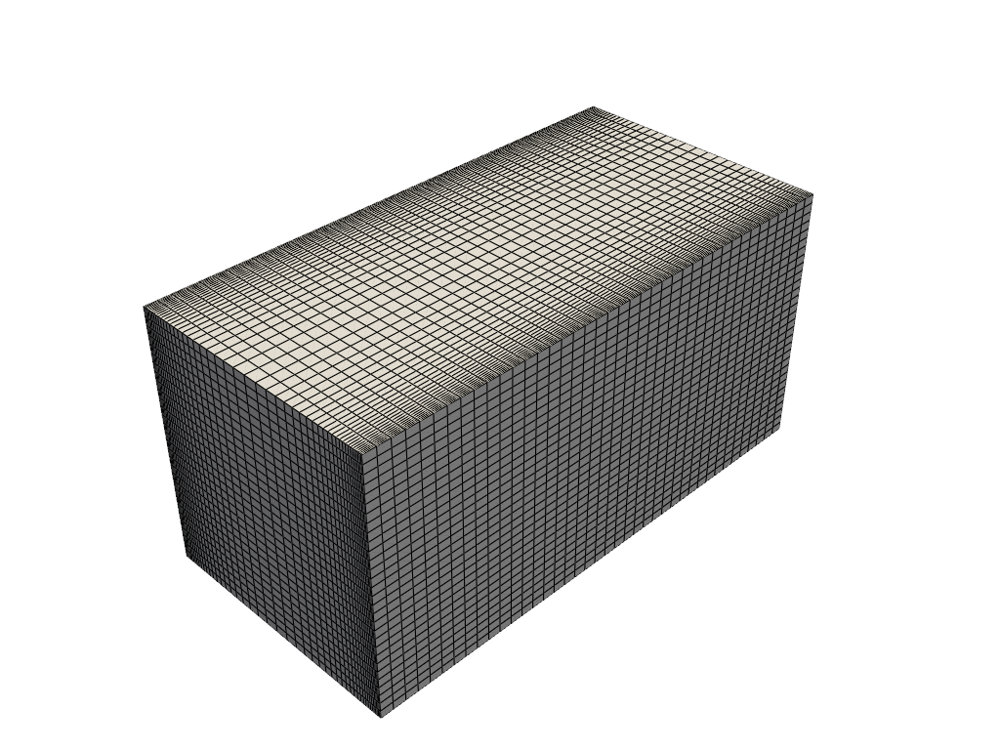
Let us import the velocity and pressure fields
[13]:
import numpy as np
var_names = ['U', 'p']
snaps = dict()
times = dict()
for field in var_names:
_snap, time = of.import_field(field, import_mode='pyvista', verbose=True, extract_cell_data=True)
snaps[field] = _snap
times[field] = time
print(' ')
Importing U using pyvista: 200.000 / 200.00 - 0.014501 s/it
Importing p using pyvista: 200.000 / 200.00 - 0.011795 s/it
Let us make in-notebook video of the slice at mid-depth of the channel over time
[14]:
def get_slice_data(grid: pv.UnstructuredGrid, snap):
grid['fun'] = snap
_new_grid = grid.cell_data_to_point_data()
slice = _new_grid.slice(normal='z', origin=(0, 0.0, 1.))
grid.clear_data()
return slice.points, slice['fun']
import matplotlib.pyplot as plt
from IPython.display import clear_output as clc
sampling = 10
for tt in range(sampling-1, len(times['U']), sampling):
height_2_width_ratio = grid.bounds[5] / (grid.bounds[1] - grid.bounds[0])
fig, axs = plt.subplots(1, 2, figsize=(6.5 * 2, 6 * height_2_width_ratio))
# Velocity
_sliced_points, _sliced_data = get_slice_data(grid, snaps['U'][tt].reshape(-1, 3))
_sliced_data = np.linalg.norm(_sliced_data, axis=1)
sc1 = axs[0].tricontourf(_sliced_points[:, 0], _sliced_points[:, 1], _sliced_data, levels=np.linspace(0, 0.18, 100), cmap='RdYlBu_r')
cbar = fig.colorbar(sc1, ax=axs[0])
cbar.ax.set_yticks(np.linspace(0, 0.18, 5))
axs[0].set_title(r'Velocity magnitude $||\mathbf{u}||$')
# Pressure
_sliced_points, _sliced_data = get_slice_data(grid, snaps['p'][tt])
sc2 = axs[1].tricontourf(_sliced_points[:, 0], _sliced_points[:, 1], _sliced_data, levels=np.linspace(snaps['p'].min(), snaps['p'].max(), 100), cmap='viridis')
cbar = fig.colorbar(sc2, ax=axs[1])
cbar.ax.set_yticks(np.linspace(snaps['p'].min(), snaps['p'].max(), 5))
axs[1].set_title(r'Pressure $p$')
for ax in axs:
ax.set_xticks([])
ax.set_yticks([])
fig.suptitle(f'Time = {times["U"][tt]:.2f} s', fontsize=16)
fig.subplots_adjust(wspace=0.02)
plt.show()
clc(wait=True)
plt.close()
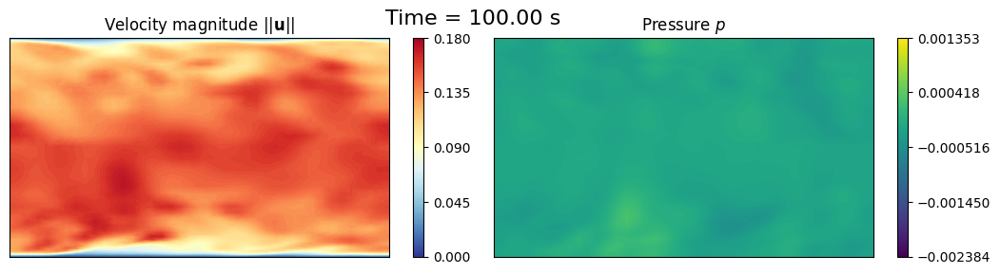
Mean Field
The fieldAverage function object in OpenFOAM is used to compute the mean field \(\overline{u}\) in a cumulative way, achieving better accuracy over time. The mean field is calculated as:
where \(t_0\) is the start time for averaging. A discrete version of this equation is implemented in OpenFOAM using a uniform time step \(\Delta t\):
at time \(t=t_n\), where \(N_t\) is the number of time steps from \(t_0\) to \(t_n\).
We want to investigate is the a-posteriori mean field computed using python and compare it with the mean field computed by OpenFOAM.
Let us import the mean value at final time computed by OpenFOAM
[15]:
umean_of = of._import_with_pyvista('UMean', extract_cell_data=True, time_instants=[100])[0][0]
umean_python = snaps['U'].mean(axis=1).reshape(-1, 3)
fig, axs = plt.subplots(1, 3, figsize=(6.5 * 3, 6 * height_2_width_ratio))
# Velocity Mean OpenFOAM
_sliced_points, _sliced_data = get_slice_data(grid, umean_of)
_sliced_data = np.linalg.norm(_sliced_data, axis=1)
sc1 = axs[0].tricontourf(_sliced_points[:, 0], _sliced_points[:, 1], _sliced_data, levels=np.linspace(0, 0.18, 100), cmap='RdYlBu_r')
cbar = fig.colorbar(sc1, ax=axs[0])
cbar.ax.set_yticks(np.linspace(0, 0.18, 5))
axs[0].set_title(r'Velocity Mean $\langle||\mathbf{u}||\rangle$ - OpenFOAM')
# Velocity Mean Python
_sliced_points, _sliced_data = get_slice_data(grid, umean_python)
_sliced_data = np.linalg.norm(_sliced_data, axis=1)
sc2 = axs[1].tricontourf(_sliced_points[:, 0], _sliced_points[:, 1], _sliced_data, levels=np.linspace(0, 0.18, 100), cmap='RdYlBu_r')
cbar = fig.colorbar(sc2, ax=axs[1])
cbar.ax.set_yticks(np.linspace(0, 0.18, 5))
axs[1].set_title(r'Velocity Mean $\langle||\mathbf{u}||\rangle$ - Python')
# Residual
_sliced_points, _sliced_data = get_slice_data(grid, umean_of - umean_python)
_sliced_data = np.linalg.norm(_sliced_data, axis=1)
sc3 = axs[2].tricontourf(_sliced_points[:, 0], _sliced_points[:, 1], _sliced_data, levels=40, cmap='viridis')
cbar = fig.colorbar(sc3, ax=axs[2])
axs[2].set_title('Residual')
for ax in axs:
ax.set_xticks([])
ax.set_yticks([])
fig.subplots_adjust(wspace=0.02)
plt.show()
grid.clear_data()
grid['U'] = snaps['U'](-1).reshape(-1, 3)
grid['UMean_OF'] = umean_of
grid['UMean_Python'] = umean_python
lines_x = [0.5, 1, 2]
line_grid = [grid.cell_data_to_point_data().sample_over_line(pointa = (x, 0.0, 0), pointb=(x, 2, 0), resolution=500) for x in lines_x]
fig, axs = plt.subplots(1, len(lines_x), figsize=(6.5 * len(lines_x), 4))
for ii, ax in enumerate(axs):
ax.plot(line_grid[ii]['Distance'], np.linalg.norm(line_grid[ii]['U'], axis=1), label='U', linewidth=2)
ax.plot(line_grid[ii]['Distance'], np.linalg.norm(line_grid[ii]['UMean_OF'], axis=1), 'g-', label='UMean OF', linewidth=2)
ax.plot(line_grid[ii]['Distance'], np.linalg.norm(line_grid[ii]['UMean_Python'], axis=1), 'r--', label='UMean Python', linewidth=2)
ax.set_title(f'Velocity profiles at x={lines_x[ii]}')
ax.set_xlabel('y')
ax.set_ylabel(r'Velocity magnitude $||\mathbf{u}||$')
ax.legend()
Importing UMean using pyvista: 1.000 / 1.00 - 0.000187 s/it
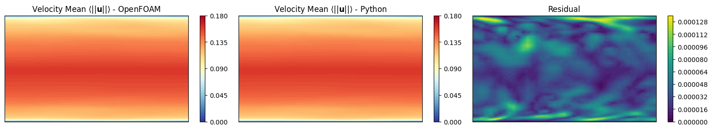
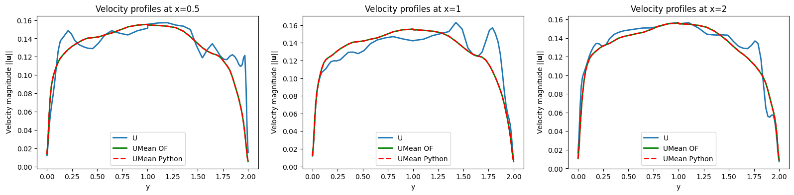
prime2Mean Field - Variance Field
The prime2MeanField function object computes the variance field \(\overline{u'u'}\) based on the mean field \(\overline{u}\) calculated using fieldAverage. The variance field is defined as:
In discrete form, this is approximated as (unbiased estimator):
at time \(t=t_n\). This calculation relies on the mean field values at each time step to determine the fluctuations \(u' = u - \overline{u}\).
We want to investigate is the a-posteriori prime2mean field computed using python and compare it with the prime2mean field computed by OpenFOAM.
In particular, the Welford’s method is used to compute the variance \(\overline{u'u'}_n\), without storing all the snapshots in the memory. Two variables are protagonists of this method: running_mean\(\leftrightarrow\overline{u}_n\) and running_M2\(\leftrightarrow M_{2,n}\), in which the former stores the mean value at each time step, while the latter accumulates the squared differences needed to compute the variance.
Calculation of the deviation from the old mean \(\delta = u_n - \overline{u}_{n-1}\), current instantaneous velocity is from the current average history.
Update the mean: \(\overline{u}_n = \overline{u}_{n-1} + \delta/n\), clearly for \(n\rightarrow +\infty\) the correction term goes to zero and this obtain to \(\overline{u}_n \approx \overline{u}_{n-1}\rightarrow\overline{u}\).
Calculation of the deviation from the new mean \(\delta_\dagger = u_n - \overline{u}_n\).
Accumulate the squared differences: \(M_{2,n} = M_{2,n-1} + \delta \cdot \delta_\dagger\).
Estimate the variance: \(\overline{u'u'}_n = M_{2,n}/(n-1)\) (unbiased estimator, even though OpenFOAM uses \(n\) in the denominator but this approach is more statistically sound).
Two implementations are provided: one using pure numpy operations, and another one using torch for GPU acceleration (not reported in the package requirements, if needed please install it separately).
Be aware: this implementation stores the prime2Mean quantities in memory, which could be an issue for very large datasets.
[16]:
import torch
import numpy as np
from tqdm import tqdm
from pyforce.tools.functions_list import FunctionsList
def welford_variance_torch(velocity_snapshots: FunctionsList, gdim = 3, sampling = 1):
device = 'mps' if torch.backends.mps.is_available() else 'cuda' if torch.cuda.is_available() else 'cpu'
n_snaps = len(velocity_snapshots)
n_cells = int(velocity_snapshots.fun_shape / gdim)
# Initialize running stats on GPU
running_mean = torch.zeros((n_cells, gdim), device=device, dtype=torch.float32)
running_M2 = torch.zeros((n_cells, gdim), device=device, dtype=torch.float32)
# Counter
count = 0
# Output container (numpy on CPU)
uprime2mean = np.zeros((int((n_snaps - 1) / sampling), n_cells, gdim))
# Loop through data one snapshot at a time
for t in tqdm(range(sampling-1, n_snaps, sampling), desc='Welford Variance Calculation - Torch'):
# Load ONLY the current snapshot to GPU
u_new = torch.from_numpy(velocity_snapshots[t].reshape(-1, gdim)).to(device)
count += 1
# 1. Delta from the OLD mean
delta = u_new - running_mean
# 2. Update the mean
running_mean += delta / count
# 3. Delta from the NEW mean
delta_dagger = u_new - running_mean
# 4. Update Sum of Squares (M2)
running_M2 += delta * delta_dagger
# 5. Calculate Variance (Prime2Mean) and Save
if count > 1:
current_variance = running_M2 / (count - 1)
uprime2mean[int((t-1) / sampling), :] = current_variance.cpu().numpy()
# Clean up GPU memory if needed
del running_mean, running_M2, u_new
if device == 'cuda':
torch.cuda.empty_cache()
elif device == 'mps':
torch.mps.empty_cache()
return uprime2mean
def welford_variance_numpy(velocity_snapshots: FunctionsList, gdim = 3, sampling = 1):
n_snaps = len(velocity_snapshots)
n_cells = int(velocity_snapshots.fun_shape / gdim)
# Initialize running stats
running_mean = np.zeros((n_cells, gdim), dtype=np.float32)
running_M2 = np.zeros((n_cells, gdim), dtype=np.float32)
# Counter
count = 0
# Output container
uprime2mean = np.zeros((int((n_snaps - 1) / sampling), n_cells, gdim))
# Loop through data one snapshot at a time
for t in tqdm(range(sampling-1, n_snaps, sampling), desc='Welford Variance Calculation - Numpy'):
# Load ONLY the current snapshot
u_new = velocity_snapshots[t].reshape(-1, gdim)
count += 1
# 1. Delta from the OLD mean
delta = u_new - running_mean
# 2. Update the mean
running_mean += delta / count
# 3. Delta from the NEW mean
delta_dagger = u_new - running_mean
# 4. Update Sum of Squares (M2)
running_M2 += delta * delta_dagger
# 5. Calculate Variance (Prime2Mean) and Save
if count > 1:
current_variance = running_M2 / (count - 1)
uprime2mean[int((t-1) / sampling), :] = current_variance
return uprime2mean
uprime2mean_torch = welford_variance_torch(snaps['U'], gdim=3, sampling=1)
uprime2mean_numpy = welford_variance_numpy(snaps['U'], gdim=3, sampling=1)
# Load UPrim2Mean from OpenFOAM for comparison
uprime2mean_of = of._import_with_pyvista('UPrime2Mean', extract_cell_data=True, time_instants=[100])[0][0]
Welford Variance Calculation - Torch: 100%|██████████| 200/200 [00:00<00:00, 1264.55it/s]
Welford Variance Calculation - Numpy: 100%|██████████| 200/200 [00:00<00:00, 3637.68it/s]
Importing UPrime2Mean using pyvista: 1.000 / 1.00 - 0.000015 s/it
Let us make some contour plots
[17]:
fig, axs = plt.subplots(3,5, figsize=(6.5 *5, 6 * 3 * height_2_width_ratio))
symmtensor_idx = [0,1,2]
labels = ['x', 'y', 'z']
for ii, label in enumerate(labels):
# UPrime2Mean OpenFOAM
_sliced_points, _sliced_data = get_slice_data(grid, uprime2mean_of[:, symmtensor_idx[ii]])
levels = np.linspace(_sliced_data.min(), _sliced_data.max(), 40)
sc1 = axs[ii,0].tricontourf(_sliced_points[:, 0], _sliced_points[:, 1], _sliced_data, levels=levels, cmap='RdYlBu_r')
cbar = fig.colorbar(sc1, ax=axs[ii,0])
axs[ii,0].set_title(r"Fluctuation Mean $\langle u"+f"_{label}' u"+f"_{label}' \\rangle$ - OpenFOAM")
# UPrime2Mean Python - Numpy
_sliced_points, _sliced_data = get_slice_data(grid, uprime2mean_numpy[-1, :, ii])
sc2 = axs[ii,1].tricontourf(_sliced_points[:, 0], _sliced_points[:, 1], _sliced_data, levels=levels, cmap='RdYlBu_r')
cbar = fig.colorbar(sc2, ax=axs[ii,1])
axs[ii,1].set_title(r"Fluctuation Mean $\langle u"+f"_{label}' u"+f"_{label}' \\rangle$ - Python")
# Residual - Numpy
_sliced_points, _sliced_data = get_slice_data(grid, uprime2mean_of[:, symmtensor_idx[ii]] - uprime2mean_numpy[-1, :, ii])
sc3 = axs[ii,2].tricontourf(_sliced_points[:, 0], _sliced_points[:, 1], _sliced_data, levels=40, cmap='viridis')
cbar = fig.colorbar(sc3, ax=axs[ii,2])
axs[ii,2].set_title(f'Residual - Numpy')
# UPrime2Mean Python - Torch
_sliced_points, _sliced_data = get_slice_data(grid, uprime2mean_torch[-1, :, ii])
sc4 = axs[ii,3].tricontourf(_sliced_points[:, 0], _sliced_points[:, 1], _sliced_data, levels=levels, cmap='RdYlBu_r')
cbar = fig.colorbar(sc4, ax=axs[ii,3])
axs[ii,3].set_title(r"Fluctuation Mean $\langle u"+f"_{label}' u"+f"_{label}' \\rangle$ - Python Torch")
# Residual - Torch
_sliced_points, _sliced_data = get_slice_data(grid, uprime2mean_of[:, symmtensor_idx[ii]] - uprime2mean_torch[-1, :, ii])
sc5 = axs[ii,4].tricontourf(_sliced_points[:, 0], _sliced_points[:, 1], _sliced_data, levels=40, cmap='viridis')
cbar = fig.colorbar(sc5, ax=axs[ii,4])
axs[ii,4].set_title(f'Residual - Torch')
for ax in axs.flat:
ax.set_xticks([])
ax.set_yticks([])
fig.subplots_adjust(wspace=0.075)
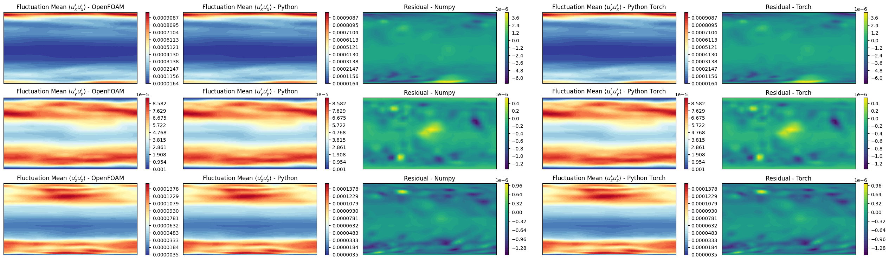
Let’s observe if the python solution converges to the OpenFOAM one as we increase the number of snapshots used in the calculation
[18]:
fig, axs = plt.subplots(1, 3, figsize=(6.5 * 3, 4))
for ii, label in enumerate(labels):
axs[ii].plot(uprime2mean_numpy[:, :, ii].mean(axis=1), 'r', label=f'Numpy', linewidth=2)
axs[ii].plot(uprime2mean_torch[:, :, ii].mean(axis=1), 'g--', label=f'Torch', linewidth=2)
axs[ii].plot([len(uprime2mean_numpy[:, ii])], uprime2mean_of[:, symmtensor_idx[ii]].mean(), 'ko', label=f'OpenFOAM', markersize=8)
axs[ii].set_xlabel('Number of snapshots', fontsize=20)
axs[ii].set_ylabel(r'$\langle u_{'+f'{label}'+'}\' u_{'+f'{label}'+r'}\' \rangle$', fontsize=20)
axs[ii].legend(fontsize=17)
axs[ii].grid()
plt.tight_layout()
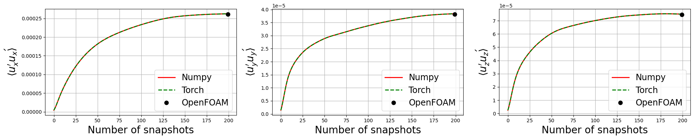
Energy Spectrum of the fluctuations
This last section shows how to compute the energy spectrum of the velocity fluctuations from OpenFOAM data. OpenFOAM generally reasons with unstructured meshes, hence the Fourier Transform cannot be directly applied. To overcome this issue, we interpolate the velocity fluctuations onto a structured grid, and then compute the energy spectrum using the Fast Fourier Transform (FFT). Let \(u'(\mathbf{x},t)\) be the velocity fluctuations, the procedure is as follows:
Interpolate the velocity fluctuations onto a structured grid using
pyvistamethod calledsample, embedded in the methodmap2structuredgridof theComputeSpectrumclass.Compute the energy spectrum using FFT from
numpy.fftmodule in the methodcompute_spectrumof theComputeSpectrumclass. The FFT is \(\hat{u'}(\boldsymbol{\kappa},t) = \mathcal{F}\{u'(\mathbf{x},t)\}\), where \(\boldsymbol{\kappa}\) is the wavevector in Fourier space. The energy spectrum \(E(k)\) is then computed as: \begin{equation*} E(\boldsymbol{\kappa}) = \frac{1}{2} \sum_{i=x,y,z} \hat{u'}_i(\boldsymbol{\kappa},t)\cdot \hat{u'}_i^\dagger(\boldsymbol{\kappa},t) = \frac{1}{2} \sum_{i=x,y,z} |\hat{u'}_i(\boldsymbol{\kappa},t)|^2 \end{equation*} where \(\dagger\) denotes the complex conjugate.Define the wave number \(\boldsymbol{\kappa} = 2\pi \cdot \boldsymbol{\xi} = \frac{2\pi}{\mathbf{L}} \cdot \mathbf{n}\), where \(\boldsymbol{\xi}\) is the spatial frequency vector, \(\mathbf{L}\) is the physical length of the domain in each direction, and \(\mathbf{n}\) is the integer vector corresponding to the discrete frequencies obtained from FFT and the magnitude \(\kappa = |\boldsymbol{\kappa}| = \sqrt{\kappa_x^2 + \kappa_y^2 + \kappa_z^2}\) is computed.
Shell Integration: Kolmogorov theory assumes isotropy (direction doesn’t matter). We want to know how much energy exists at a size scale k, regardless of direction. We transform the 3D “cloud” of energy into a 1D line by summing everything in spherical shells.
At first, the shell of bin \(\Delta\kappa\) is defined as \(\mathcal{S}_i = \{q | \kappa_i \leq |q| < \kappa_{i+1}\}\), where \(\kappa_i = i \cdot \Delta\kappa\).
Summation (Discrete Integration): iterate through the bins and sums the energy of all modes that fall within each shell: \begin{equation*} E(\kappa_i) = \sum_{\boldsymbol{\kappa} \in \mathcal{S}_i} E(\boldsymbol{\kappa}) \end{equation*} This approximates the integral definition of the isotropic energy spectrum: \begin{equation*} E(\kappa) = \int_{\mathcal{S}_\kappa} E(\boldsymbol{\kappa}) d\sigma \end{equation*} given the spherical shell \(\mathcal{S}_\kappa = \{\boldsymbol{\kappa} \text{ such that } |\boldsymbol{\kappa}| = \kappa\}\).
Reference Github repository for this section
[19]:
from scipy.fft import fftn, fftfreq
class ComputeSpectrum:
def __init__(self, u_mean, grid,
N = (128, 128, 128)):
"""
u_mean: shape (Nh, 3)
grid: pyvista grid object
"""
self.umean = u_mean
self.grid = grid # PyVista grid object - unstructured
# Create structured grid
self.Nx, self.Ny, self.Nz = N
bounds = grid.bounds
struct_grid = pv.ImageData()
struct_grid.dimensions = (self.Nx, self.Ny, self.Nz)
struct_grid.origin = (bounds[0], bounds[2], bounds[4])
struct_grid.spacing = (
(bounds[1]-bounds[0])/(self.Nx-1),
(bounds[3]-bounds[2])/(self.Ny-1),
(bounds[5]-bounds[4])/(self.Nz-1)
)
self.lx = bounds[1]-bounds[0]
self.ly = bounds[3]-bounds[2]
self.lz = bounds[5]-bounds[4]
self.struct_grid = struct_grid
def map2structuredgrid(self, u):
self.grid.clear_data()
self.grid['U'] = u
U_field = self.struct_grid.sample(self.grid)['U'].reshape((self.Nz, self.Ny, self.Nx, 3)) # PyVista/VTK often orders as Z-Y-X
U_field = np.transpose(U_field, (2,1,0,3)) # Now (Nx, Ny, Nz, 3) for FFT
return U_field
def compute_spectrum(self, u):
U_field = self.map2structuredgrid(u)
U_fft = fftn(U_field, axes=(0,1,2))
# compute wave numbers
kx = fftfreq(self.Nx, self.struct_grid.spacing[0]) * 2 * np.pi
ky = fftfreq(self.Ny, self.struct_grid.spacing[1]) * 2 * np.pi
kz = fftfreq(self.Nz, self.struct_grid.spacing[2]) * 2 * np.pi
# Compute energy spectrum
E_spectrum = 0.5 * np.sum(np.abs(U_fft)**2, axis=-1) # Sum over velocity components
return E_spectrum, kx, ky, kz
def movingaverage(self, interval, window_size):
window = np.ones(int(window_size)) / float(window_size)
return np.convolve(interval, window, 'same')
def build_spectrum(self, u, smoothing_window=1):
E_spectrum, kx, ky, kz = self.compute_spectrum(u)
# Build 3D mesh of wave numbers
KX, KY, KZ = np.meshgrid(kx, ky, kz, indexing='ij')
k_mag = np.sqrt(KX**2 + KY**2 + KZ**2) # |k|
k_flat = k_mag.flatten()
E_flat = E_spectrum.flatten()
k_max = k_flat.max()
n_bins = int(np.floor(np.sqrt(self.Nx**2 + self.Ny**2 + self.Nz**2))) # or ~min(Nx,Ny,Nz)/2
# Linearly spaced bins (log bins also possible)
k_bins = np.linspace(0, k_max, n_bins)
E_k = np.zeros(n_bins - 1)
k_center = np.zeros(n_bins - 1)
for i in range(n_bins - 1):
mask = (k_flat >= k_bins[i]) & (k_flat < k_bins[i+1])
if np.any(mask):
E_k[i] = E_flat[mask].sum()
k_center[i] = 0.5*(k_bins[i] + k_bins[i+1])
if smoothing_window > 1: # apply moving average to smooth the spectrum
E_k = self.movingaverage(E_k, smoothing_window)
return k_center, E_k
generate_spectrum = ComputeSpectrum(umean_python, grid, N=(64,64,64))
k_center, E_k = list(), list()
# Compute spectra at last time step
u_fluct = snaps['U'](-1).reshape(-1, 3) - umean_python
k_center, E_k = generate_spectrum.build_spectrum(u_fluct, smoothing_window=3)
import matplotlib.pyplot as plt
fig, axs = plt.subplots(1, 1, figsize=(8,5))
axs.plot(k_center, E_k, '-', linewidth=2, label='Computed Spectrum')
# Pick a constant so line overlaps your spectrum in inertial range
C = E_k[np.argmax(E_k)] * (k_center[np.argmax(E_k)]**(5/3))*1.5
axs.plot(k_center, C * k_center**(-5/3), '--', label=r'$k^{-5/3}$')
axs.set_xscale('log')
axs.set_yscale('log')
axs.legend(fontsize=17)
axs.tick_params(axis='both', which='major', labelsize=15)
axs.set_xlabel(r'$\log k$', fontsize=20)
axs.set_ylabel(r'$\log E(k)$', fontsize=20)
axs.grid(True, which='both', ls='--', alpha=0.4)
plt.show()
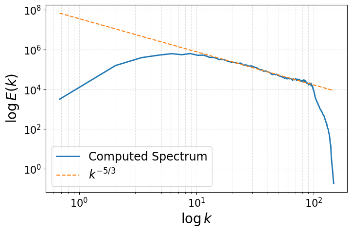